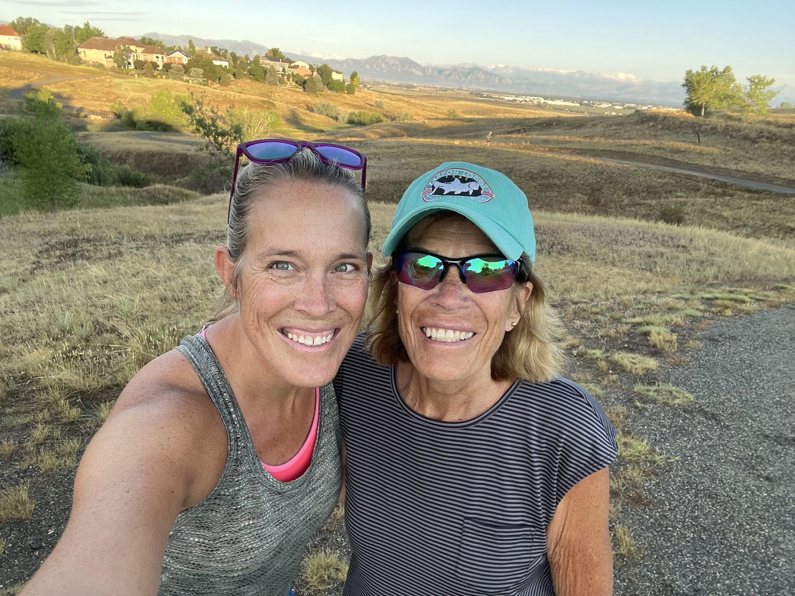

Meet our founder

Hi, I’m Jamie Dickinson, founder of Gathered Pages Collective.
I’ve always believed that books do more than tell stories — they help us understand ourselves, connect with others, and sometimes find the courage to change our lives.
My love of reading began with my mom. Growing up, she read to my brother and me every night, instilling in us not only a love of books but a curiosity about the world and the people in it. Those evenings planted the seeds for a lifelong passion that continues to shape my life today. In many ways, books have become a language we still share. Although we now live more than 2,000 miles apart, not a week goes by without a conversation about what we’re reading. Those discussions have strengthened our relationship across the years and the miles, reminding me that stories have a unique way of bringing people together.
People often ask me how I find time to read. As a busy lawyer, yoga instructor, mom, and wife, I understand why they ask. Life is full, schedules are demanding, and there never seem to be enough hours in the day. The truth is that I can’t imagine navigating my life without books. Reading is the one thing that helps me quiet my constantly whirling mind and truly relax. It creates space to reflect, learn, dream, and simply breathe.
“In one particularly challenging chapter of my life, reading helped me recognize truths I had been avoiding and ultimately gave me the courage to make hard decisions that changed the trajectory of my life.”
The idea for Gathered Pages Collective grew from my own experience with reading and the profound impact it has had on my life. Throughout the years, books have been my teachers, my companions, and often my source of clarity during difficult seasons. In one particularly challenging chapter of my life, reading helped me recognize truths I had been avoiding and ultimately gave me the courage to make hard decisions that changed the trajectory of my life. Through the stories and experiences of others, I found perspective, strength, and hope for a different future.
That experience reinforced something I had always believed: stories have power. They remind us that we are not alone. They help us see possibilities we may not have considered and give us the confidence to take the next step in our own journey.
But reading has given me more than personal growth — it has given me community. Some of the most meaningful conversations I’ve had, the deepest connections I’ve formed, and the greatest lessons I’ve learned have come from sharing books with others.
Because I split my time between two states and am rarely in one place for long, building and maintaining community can be challenging. Yet books have provided a constant foundation. No matter where I am, discussing stories with other women creates connection, belonging, and understanding. Those conversations have become an anchor in my life, helping me build relationships that support and sustain me through every season.
Over time, I realized that what I valued most wasn’t simply reading books — it was sharing them. The discussions, the laughter, the vulnerability, and the friendships that grew from a shared story often became just as meaningful as the books themselves.
That realisation became the inspiration for Gathered Pages Collective.
Our mission is simple: to connect women through shared stories by providing free book club experiences to women seeking connection, belonging, and community. Through thoughtfully curated Book Clubs in a Box, we create opportunities for meaningful conversation, personal growth, friendship, and hope.
Reading is important to me because it has shaped who I am. It has challenged me, comforted me, inspired me, and helped me navigate some of life’s most difficult decisions. Every book offers an opportunity to see the world — and ourselves — a little differently.
My hope is that every woman who participates in a Gathered Pages Collective book club experiences what I have experienced through reading: the comfort of being understood, the courage that comes from hearing another woman’s story, and the strength that comes from knowing you are not alone.
Jamie Dickinson is the founder of Gathered Pages Collective. She is a lawyer and a yoga instructor, splits her time between Colorado and Nebraska, and would like to know what you are reading.
“There’s power in allowing yourself to be known and heard, in owning your unique story, in using your authentic voice.”
A shelf of lines we keep coming back to sits behind the reading list — the books we are considering, and why.
The reading listEvery box begins a conversation. Help us send the next one.
A gift covers a book by a woman author, a journal and pen from a woman-owned maker, a card naming the women-owned businesses her kit came from, and the guide that lets a facilitator run the whole club without training. If you would rather give your time than your money, introduce us to a group.